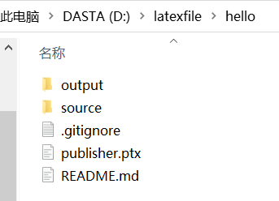
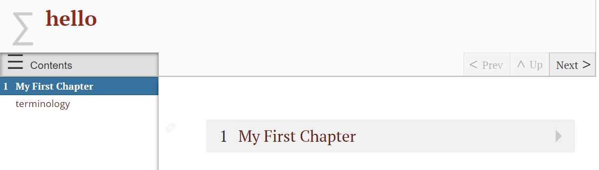
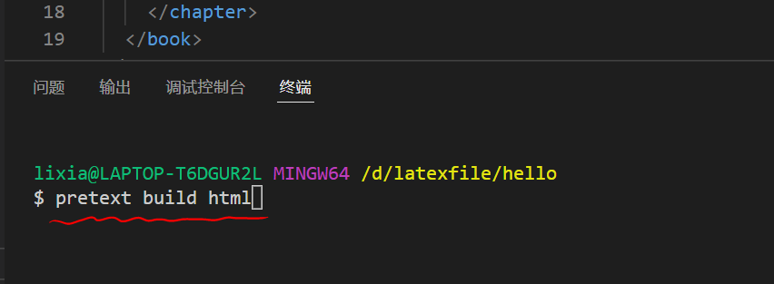
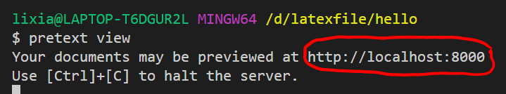
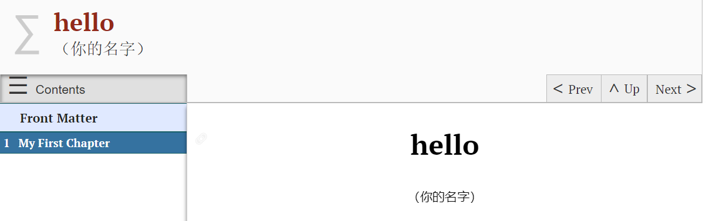

Section 1.2 第一个PreText项目
Subsection 1.2.1 安装PreText
首先我们需要安装PreText。安装之前确保python版本在3.8.5之上。打开终端，输入：
pip install pretext如果上述指令不成功，则输入：
python -m pip install pretext为了验证是否安装成功，请输入：
pretext --version（或者是
python -m pretext --version）。 如果返回的是一个数字（意思是版本号），则安装成功。Subsection 1.2.2 创建一个示例项目
我们先通过一个示例项目来熟悉PreText的基础操作。 首先，选定一个文件夹（假定它的位置是
D:/A），我们想把项目放在这个文件夹里。 打开终端，进入文件夹。方法是在终端输入：cd D:/A然后在该文件夹下创建示例项目。方法是在终端输入：
pretext new hello这时候你就会发现，
D:/A文件夹下就有一个名为hello的子文件夹。 这个hello文件夹下有如下东西：
其中，
source是储存源代码文件的，output是储存输出的网页等文件的。 我们可以看看这个项目输出的网页长什么样。 打开output文件夹下的html文件夹下的index.html，就会看到网页长这个样：
Subsection 1.2.3 编辑源代码
现在让我们编辑源代码。假设我们想添加扉页以及标注自己的名字。 打开vscode，并在vscode里打开
hello文件夹。 你会发现，其下的source文件夹里有且只有一个main.ptx文件。 这个文件就是源代码文件。 打开它，并在第8行<title>hello</title>与 第9行<chapter xml:id="my-first-chapter">之间插入如下字符：<frontmatter>
<titlepage>
<author>
<personname>（你的名字）</personname>
</author>
</titlepage>
</frontmatter>
Subsection 1.2.4 生成网页文件并浏览
我们先生成网页文件。在vscode里的终端输入
pretext build html如下图所示：

现在我们浏览生成的网页。 一种方法是像之前一样，回到
output文件夹，找到其下的html文件夹里的index.html。 另一种方法是在vscode里的终端输入：pretext view回车后如下图所示：

按住
Ctrl键同时点击红圈处的链接，即可访问网页。现在编辑后的网页长这个样：
Subsection 1.2.5 生成Latex文件并浏览
一些人可能更喜欢Latex文件这种输出形式。生成Latex文件的指令是
pretext build latex浏览生成的Latex文件的方法是打开
hello/output/latex文件夹里的main.tex。 另一种方法仍然是在终端里运行pretext view打开链接后选择latex即可。